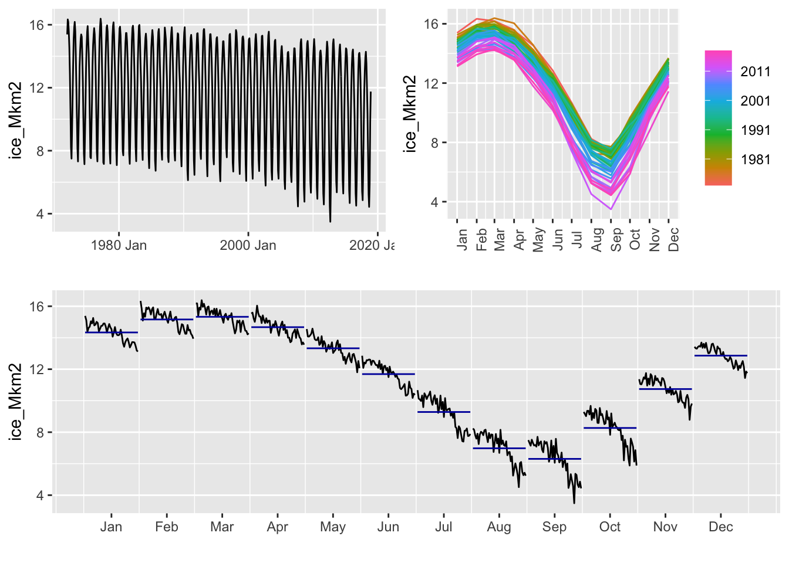

1 Introduction
\[ \newcommand\N{{\mathbb{N}}} \newcommand\Z{{\mathbb{Z}}} \newcommand\R{{\mathbb{R}}} \]
L’objectif de ce cours est de donner les bases pour modéliser l’évolution dans le temps, ici supposé discret, d’un phénomène aléatoire. On parle de série temporelle.
Nous allons ici donner quelques exemples de séries temporelles pour fixer les idées et introduire les questions qui peuvent être adressées autour de l’étude des séries temporelles.
1.1 Quelques exemples de séries temporelles
Les séries temporelles sont présentes dans de nombreux domaines d’applications. On donne ici quelques exemples illustratifs.
Example 1.1 On peut par exemple s’intéresser à l’évolution de la taille d’une population. La Figure 1.1 représente la population (en million d’habitants) en France entre 1846 à 1951 (à gauche) et aux USA entre 1790 et 1990 (à droite). Ces deux séries temporelles n’ont pas la même tendance générale.
Example 1.2 On donne ici un exemple bien connu en écologie. La Figure 1.2 représente le nombre de fourrures de lièvres (Hare) et de lynx échangées à la Compagnie de la Baie d’Hudson de 1845 à 1935. On constate la présence de cycles des populations de lynx (le prédateur) et du lièvre (sa proie). Ce jeu de données est disponible dans la librairie fpp3 sous le nom de pelt.
Example 1.3 On peut aussi donner un exemple en climatologie. La Figure 1.3 représente l’évolution de la surface de la glace dans l’Artique de 1972 à 2018. On peut observer sur cette série temporelle une périodicité et une tendance à décroitre.

Example 1.4 Comme dernier exemple, on s’intéresse à la célèbre série temporelle AirPassengers donnant le nombre mensuel (en milliers) de passagers des lignes aériennes entre les années 1949 et 1960 (à gauche de la Figure 1.4). On peut observer une périodicité dans la série temporelle et une croissance exponentielle avec une augmentation de la variabilité. On peut transformer cette dernière série en considérant le logarithme népérien du nombre de passagers aériens (à droite de la Figure 1.4).
Les exemples de séries temporelles ne manquent pas. On pourrait encore citer l’évolution de la température sur une période donnée, la concentration en polluants au cours du temps, le cours d’une action en finance, la consommation en électricité, l’évolution des recherches d’un mot sur internet, l’électrocardiogramme d’une personne en médecine, ….
Dans la suite de ce cours, on suppose que la séries observée est une réalisation d’une suite de variables aléatoires. Il faut bien noter que l’ordre est important puisque l’on étudie un phénomène au cours du temps.
On note \(Y_t\) la valeur du phénomène au temps \(t\in T\) où \(T\) est l’espace de temps discret (souvent \(T=\N\) voire \(\Z\)). Le processus \((Y_t)_{t\in T}\) est alors appelé série temporelle.
1.2 Quelles questions autour de l’étude d’une série temporelle ?
Nous sommes tout d’abord confronter au problème de la modélisation d’une série temporelle. On va chercher à ajuster un modèle qui décrit “au mieux” le comportement de la série temporelle. Ceci va nécessiter d’estimer les paramètres pour ajuster le modèle, tester son adéquation à la série temporelle étudiée, voire faire de la sélection de modèle entre plusieurs modèles en compétition.
Il est important de noter que l’on ne recherche pas un ajustement exact aux données. L’objectif est d’extraire la structure générale du signal et d’éliminer le bruit. On va en particulier chercher à déceler la présence d’une tendance, d’une saisonnalité dans les données.
Si l’on reprend la série temporelle du nombre de passagers aériens (voir Example 1.4), on peut estimer une saisonnalité et en déduire la série corrigée des variations saisonnières (voir Figure 1.5). On reviendra plus tard sur cette notion.
Après l’analyse et la modélisation d’une série temporelle, on est souvent intéressé par la prévision des futures valeurs de la série. Par exemple, on peut chercher à prédire la température dans les jours à venir, la concentration en ozone, … Plus formellement, à partir des \(n\) premiers instants \(Y_1,\ldots,Y_n\) de la série, on souhaite prévoir la valeur suivante \(Y_{n+1}\) ou plus éloignée dans le temps \(Y\_{n+h}\). Un exemple de prévision sur l’année suivante de la série temporelle AirPassengers est données en Figure 1.6. On devra s’intéresser alors à l’erreur de prédiction, à la taille des intervalles de prédiction, …